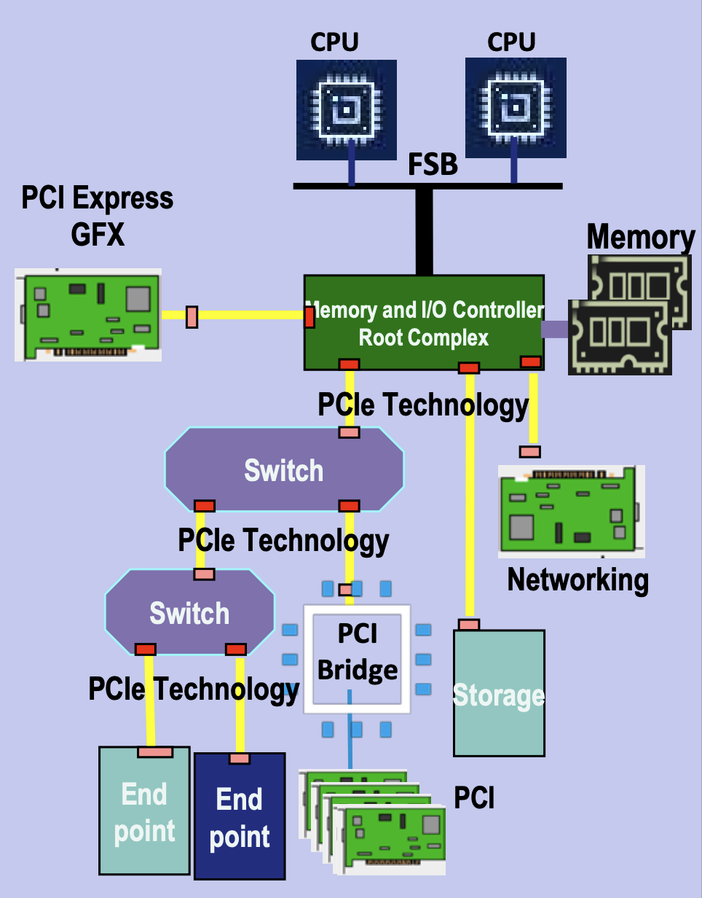
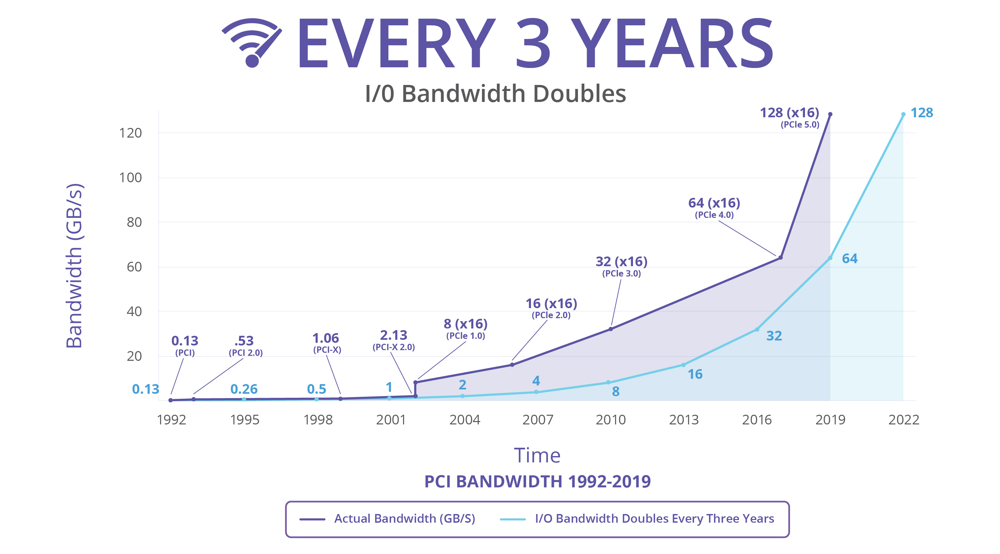
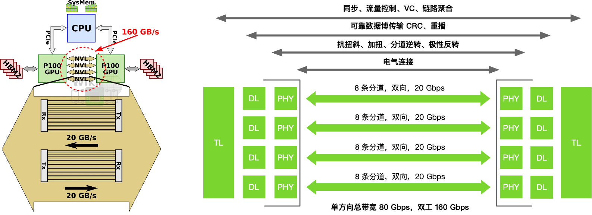
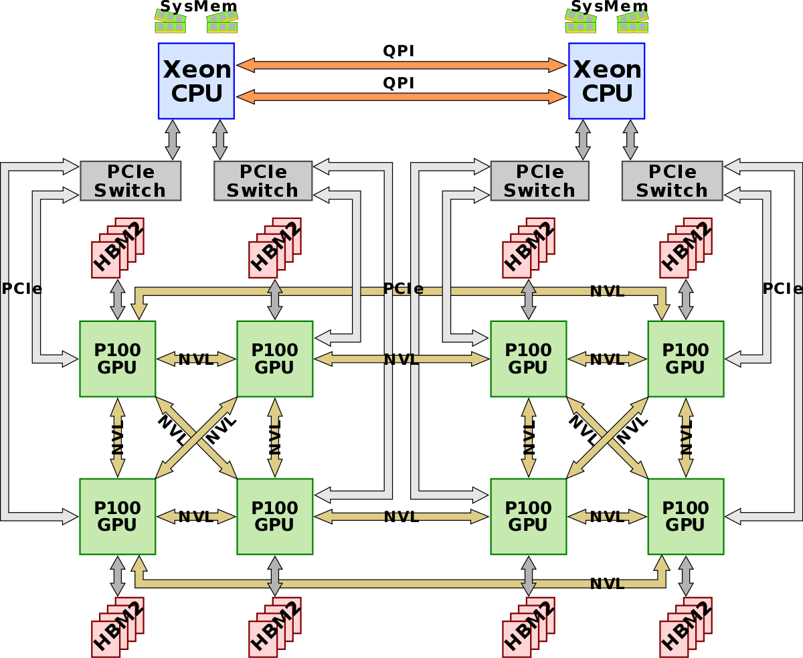
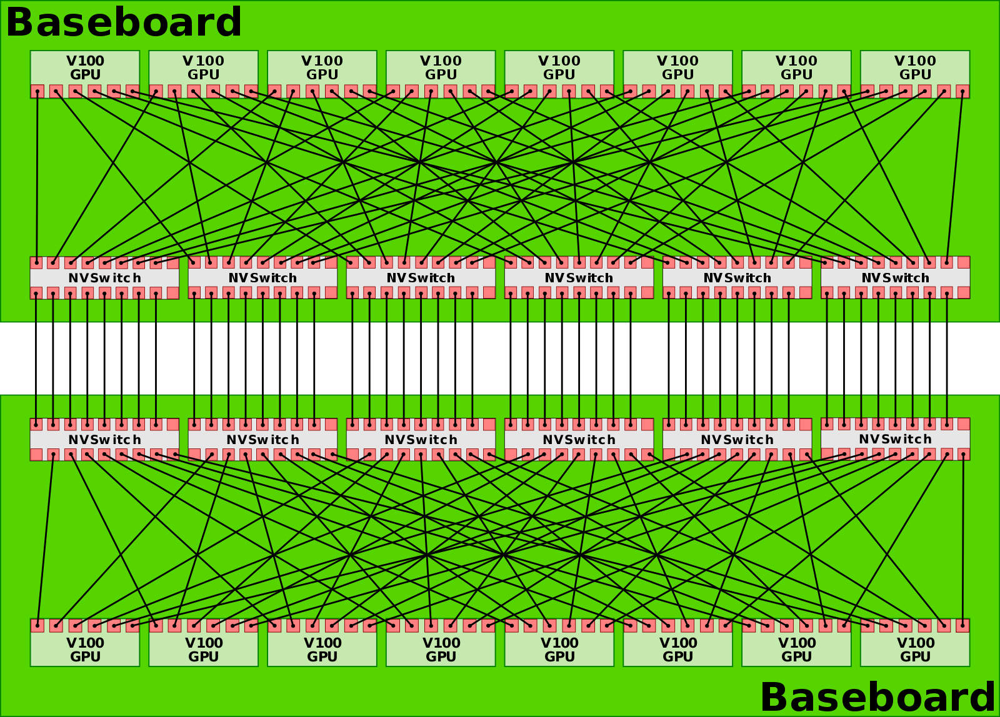
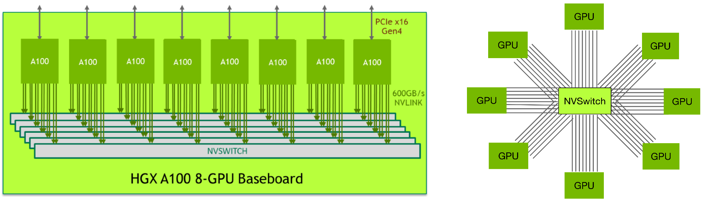
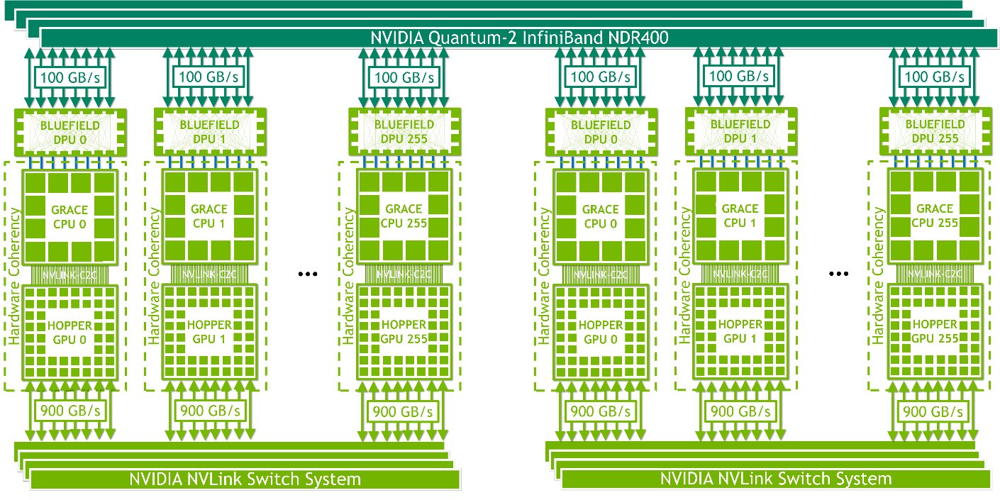
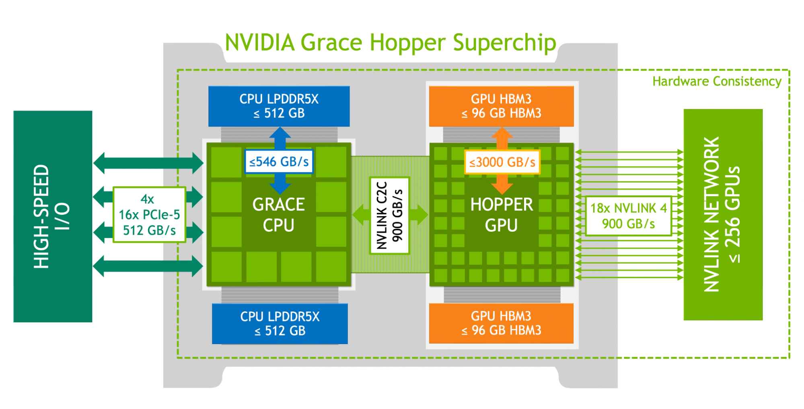
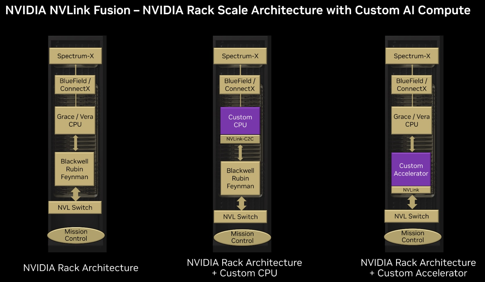

07.大模型集群互联技术#
Author by: SingularityKChen
本章是集合通信的最后一个部分的内容，将介绍 XPU （GPU/NPU）卡间互联与 Scale-Up、节点间互联与 Scale-Out 的相关概念以及产业界 Scale-Up 和 Scale-Out 的诸多通信协议的纷争。
Scale-Up 和 Scale-Out 的背景#
大模型的参数从数十亿到数万亿级别，使得单机算力远不足以支撑训练和推理。这促使业界构建由数万卡乃至百万卡算力集群。
然而，随着算力芯片数量增加，通信开销迅速攀升，形成“通信墙”瓶颈：如果互联网络带宽和延迟跟不上，算力卡增加带来的加速比将大打折扣。
大模型训练需要数万算力芯片紧密协同，并行处理海量数据，这些算力卡间必须持续高速交换梯度、参数等数据；没有高性能互联架构，算力卡会因网络瓶颈而无法线性扩展性能。
为突破通信瓶颈，Scale-Up 与 Scale-Out 两种体系架构被结合运用： Scale-Up（纵向扩展） 指在单个超级节点/服务器内集成尽可能多的加速器，通过高速互联总线使其看似“一台机器”，减少节点内通信延迟； Scale-Out（横向扩展） 则通过集群网络将多台服务器相连，实现大规模扩容。传统上，HPC 领域更多采用 Scale-Out 的集群方式，但在大模型训练中，单节点内部署更多算力卡（Scale-Up）可以显著降低部分通信开销，从而提升整体效率。
因此，大模型训练集群往往由多算力卡超级节点（SuperPod）（如华为 CloudMatrix 384 超节点由 384 张 910C 芯片构成）通过高速网络互联组成，两种架构优势互补。
在这种背景下，各类互联技术迅猛发展，以满足大模型对低延迟、高带宽、强一致性通信的苛刻需求。
XPU 卡间互联与 Scale-Up#
PCIe 诞生的背景#
在上世纪 90 年代末，计算机 I/O 总线的发展遇到了瓶颈：传统 PCI（Peripheral Component Interconnect）总线采用并行架构，带宽在多设备共享下容易发生争用，而且随着频率提升，时钟同步和布线的复杂度急剧增加，PCI 2.0 最高 66 MHz 的频率仅能提供 533 MB/s 的带宽；与此同时，AGP（Accelerated Graphics Port）虽然为显卡带来了更高带宽，但它只服务于 GPU，无法统一所有 I/O 需求。
那时，行业亟需一种统一的高速点对点互联方式，为每个设备提供独立链路，避免带宽争用，同时利用串行化（SerDes）替代并行总线以便提升速率，并支持热插拔和可扩展的 lane 设计（x1/x4/x8/x16），从而在灵活性和扩展性上满足未来的发展需求。
当时，硬件基本上都是围绕 Intel x86 CPU 进行构建。为了能让计算机内部能够更好地传输数据，Intel 牵头设计了 PCIe 总线，在 2003 年推出 PCI Express (PCIe 1.0)，作为 PCI/AGP 的继任者。它采用高速串行点对点架构，可横向扩展 lane 数，逐渐成为统一的互联标准。

(image from PCI-SIG®)从 2003 年至今（2025 年），PCIe 已经发布了 7 个版本，带宽每三年增长一倍，已从 PCIe 1.0 最高双向 8 GB/s 跃升为 PCIe 7.0 512 GB/s。

(image from PCI-SIG®)按照这个趋势，PCIe 8.0/9.0/10.0 标准将会在 2028 年、2031 年和 2034 年公布，其带宽将会增加到最高 4 TB/s。
PCI 版本 |
年份 |
传输速率 |
编码方式 |
x1 单向带宽 |
x16 双向总带宽 |
|---|---|---|---|---|---|
PCI |
1992 |
33 MHz |
32b/34b |
113 MB/s |
-- |
PCI 2.0 |
1993 |
66 MHz |
64b/66b |
533 MB/s |
-- |
PCIe 1.0 |
2003 |
2.5 GT/s |
8b/10b |
256 MB/s |
8 GB/s |
PCIe 2.0 |
2007 |
5.0 GT/s |
8b/10b |
512 MB/s |
16 GB/s |
PCIe 3.0 |
2010 |
8.0 GT/s |
128b/130b |
1 GB/s |
32 GB/s |
PCIe 4.0 |
2017 |
16 GT/s |
128b/130b |
2 GB/s |
64 GB/s |
PCIe 5.0 |
2019 |
32 GT/s |
128b/130b |
4 GB/s |
128 GB/s |
PCIe 6.0 |
2022 |
64 GT/s |
PAM4 + FEC |
8 GB/s |
256 GB/s |
PCIe 7.0 |
2025 |
128 GT/s |
PAM4 + FEC |
16 GB/s |
512 GB/s |
PCIe 8.0 |
2028 |
256 GT/s |
PAM16 |
32 GB/s |
1 TB/s |
NVLink 诞生的背景#
随着深度学习和高性能计算在 2010 年前后迅速发展，GPU 已经成为并行计算的核心加速器，但传统的 PCIe 互联逐渐暴露出带宽不足和延迟过高的问题。以 PCIe 3.0 为例，单向带宽仅约 16 GB/s（x16 通道），而当时 GPU 内部的显存带宽已超过数百 GB/s，GPU-GPU 之间的数据交换成为性能瓶颈。
为了解决这一矛盾，NVIDIA 在 2014 年首次公布了 NVLink，采用高速差分信号和多链路聚合的方式为 GPU 与 GPU、GPU 与 CPU 之间提供更高带宽、更低延迟的互联通道，其目标是突破 PCIe 的限制，把多 GPU 之间、GPU 与 CPU 之间做成更接近同一内存域的高带宽、低延迟互联，使多 GPU 系统能够像单 GPU 一样高效协同工作。
2016 年，Pascal P100 首次把 NVLink 带到量产平台，支持多条链路成组以叠加带宽，这一做法直接奠定了后续各代 NVLink 以更多链路和更快带宽扩展规模的路线图。

Volta 实现与 IBM POWER9 做到 GPU 与 CPU 直连，在当时的 Power 系统里绕开了 GPU 与 CPU 间的 PCIe 限速。

同时，首次亮相的 NVLink Switch 把多条 NVLink 聚合成非阻塞交叉互联，让 16 卡 V100 的 DGX-2 能在单机内实现全互联，这是 NVLink 从点对点走向交换网络的关键转折。

Ampere 时代引入第三代 NVLink，DGX A100 机内用 6 颗第二代 NVSwitch 把 8 卡 A100 做成全互联拓扑；这一代的变化不在更大的 GPU 域，而在更干净的机内全互联与更高端口速率的工程化落地。

NVLink 原本只用于机箱内部通信。2022 年，Hopper 实现跨机箱的域：推出 NVLink Switch System，把 NVLink 从机内/机箱级扩展到跨节点、跨机箱的域，可将多达 256 块 H100 组成一个 NVLink HBD（High Bandwidth Domain，超带宽域）。 英伟达将这种以超大带宽互联 16 卡以上 GPU-GPU 的 Scale Up 系统，称为超节点（SuperPod）。

与此同时，NVIDIA 也推出了NVLink-C2C，作为片间（die/package）一致性互联用于 Grace-Hopper 等超芯片（SuperChip）形态，把 CPU 大容量内存纳入可寻址空间，这两项共同把 NVLink 从机内总线升级为“机柜-级域内网络”的角色。

Blackwell 进入第五代 NVLink，NVL72 单柜把 72×Blackwell 组成一个超高带宽 NVLink 域、GPU 与 GPU 互通总带宽达 130 TB/s；单一 NVLink 域可扩展到 576 GPU 的上限。
2025 年，NVIDIA 面向产业推出“半定制”开放计划 NVLink Fusion，其将已量产的 NVLink 规模化 fabric 与参考设计、IP 及认证生态开放给第三方 CPU/ASIC/XPU，使其能原生接入 NVLink 的 Scale-Up 域并与 Spectrum-X 等以太 Scale-Out 方案协同，构建异构混合 AI 基础设施。

NVLink 从“多链路点对点”的板间直连开始，经由 NVSwitch 完成机内全互联，再以 NVLink Switch System 扩展到跨机箱的 域内网络；期间通过 NVLink-C2C 把 CPU 的大容量内存纳入可寻址空间，最终 Blackwell 把 NVLink 域做成“机柜为基本单元、可拼成数百 GPU 的统一加速器”。这也是其从单机 Scale-Up 向“机柜级 Scale-Up”的关键跨越。
下表总结了 NVLink 从诞生至今的时间线、性能指标和对应的 GPU 型号：
NVLink 代际 |
年份 |
单链路速率 |
最大链路数 |
GPU 总带宽 |
对应 GPU 架构 / 型号 |
NVSwitch 世代 |
关键改变 / 重新定位 |
|---|---|---|---|---|---|---|---|
NVLink 1 |
2016 |
20 GB/s |
4 |
80 GB/s |
Pascal P100 |
无（仅点对点） |
首次量产化；支持链路成组叠带宽，确立“多链路聚合”范式 |
NVLink 2 |
2017 |
25 GB/s |
6 |
300 GB/s |
Volta V100 |
NVSwitch v1（实验性） |
与 IBM POWER9 实现 CPU↔GPU 直连；NVSwitch 首秀，把 NVLink 从点对点扩展为交换网络 |
NVLink 3 |
2020 |
50 GB/s |
12 |
600 GB/s |
Ampere A100 |
NVSwitch v2，8 GPU 全互联 |
机内全互联工程化：6×NVSwitch 连接 8×A100，提升端口速率与拓扑整洁度 |
NVLink 4 |
2022 |
100 GB/s |
18 |
900 GB/s |
Hopper H100 |
NVSwitch v3，256 GPU |
NVLink Switch System 把域扩展到跨节点/机箱，最多 256×H100；引入 NVLink-C2C 实现 CPU↔GPU 片间一致性 |
NVLink 5 |
2024 |
200 GB/s |
18 |
1.8 TB/s |
Blackwell B100 |
NVSwitch v4，576 GPU |
进入机柜级“单域”常态化：NVL72 单柜 72 GPU、域内 130 TB/s，总规模可达 576 GPU |
NVLink 6 |
~2026 |
400 GB/s* |
18+ |
3.6 TB/s* |
Rubin（计划） |
NVSwitch v5（预期） |
|
NVLink 7 |
~2028 |
800 GB/s* |
18+ |
7.2 TB/s* |
Vera（计划） |
NVSwitch v6（预期） |
华为灵渠总线#
Scale-Up fabric 与其他 Scale-Up 协议#
Scale-Up 的 fabric 首先要在一个受限物理域里，把几十到上千个加速器组织成统一的计算与内存池。这要求链路具备内存语义（load/store、原子操作）以支撑直接访存，而不是仅靠消息传递；并要求在端到端极低时延下提供有序或可选无序的可靠传输与无损链路（链路层重传或 PFC/CBFC），以保证同步与集合通信的确定性。
除了 NVLink 之前，目前业内还有 ETH-X、OISA、SUE、UALink、UB 等协议。
Broadcom 在 2025 年 4 月的 OCP 全球峰会上发布了 SUE，以解决标准以太网在横向扩展方面的问题。
UALink 1.0 将内存语义作为核心能力，规定读、写与原子事务，由软件维持一致性，同时支持 1024 个端点的单域扩展；其物理与链路层基于 200G/lane（212.5 GT/s 信令）SerDes。